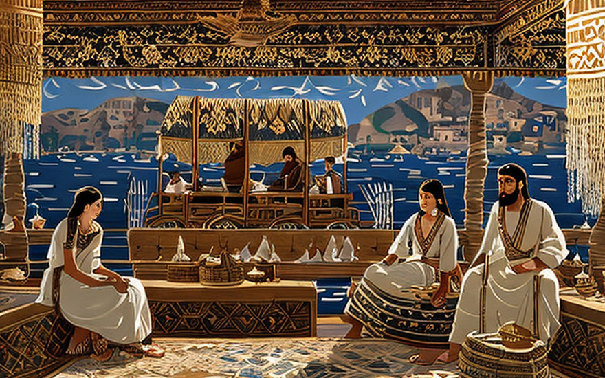
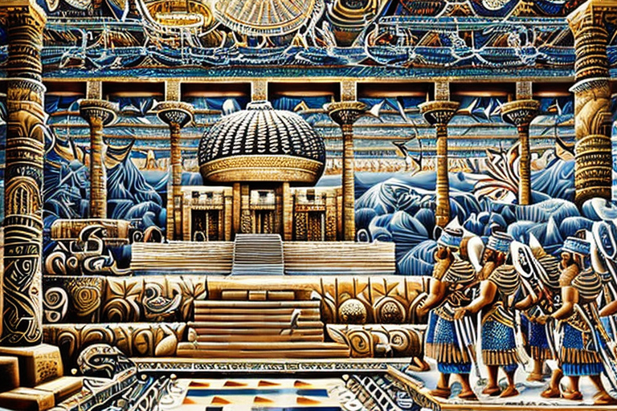

Ururum in ancient Zgaroth
HOME
Table of Contents
In search of the woolly giant

Folks of the ancient land of Sumeria! A great dilemma has befallen our brethren in the far-off village of Zargoth. The people there are in dire need of a sail cloth for their seafaring vessels, yet no animal is so mighty as to provide the required size. Tigers, elephants, and donkeys have all been tried, but alas, their skins are too small.
As he arrives in Zargoth, Ururum is greeted by a group of locals who explain the situation in hushed tones. They lead him to the docks, where a fleet of ships is anchored, waiting for a sail cloth to be hoisted. Ururum takes one look at the ships and nods thoughtfully.
“Tell me,” he says, “what is the largest animal in these parts?”
The locals scratch their heads and murmur amongst themselves. Finally, one brave soul speaks up.
“The great woolly mammoth, Sir. But they are long extinct.”
Ururum’s eyes light up. “Nonsense! There must be some trace of these creatures left behind. I shall scour the land until I find what I’m looking for.”
And so, Ururum out on his quest, accompanied by a small band of loyal followers. They search high and low, through thick forests and treacherous mountains, until finally, they come upon a cave hidden deep in the heart of the wilderness.
Inside the cave, they find the remains of a woolly mammoth, its massive bones towering over them like a cathedral. Ururum examines the bones carefully, taking precise measurements, noting every detail with the care of a skilled craftsman.
From bones to cloth

As he ran his hands over the mammoth’s bones, Ururum felt a sudden sense of despair. For though the creature had once been mighty and strong, its skin had long since disintegrated into dust, leaving nothing but bone and memory.
With a heavy heart, Ururum realized that animal skins were a deprecated technology for the sail cloth that the people of Zargoth so desperately needed. The time had come to embrace a new era of innovation and progress.
And so it was that Ururum returned to Zargoth with a bold new plan. He would build a factory where skilled weavers could create sails from woven cloth, rather than relying on the skins of long-dead beasts.
It was a grand undertaking, but Ururum was undaunted. He rallied the people of Zargoth to his cause, and together they toiled day and night to build the factory, weaving their dreams into reality.
And in the end, the people of Zargoth had a sail cloth that was stronger and more durable than any animal skin could ever be. They set sail on their ships, powered by the wind and the ingenuity of their ancestors, and they knew that their future was bright and full of possibility.
Ururum’s textile triumph

As Ururum’s factory hummed with the sound of looms and spinning wheels, the people of Zargoth marveled at the cloth that emerged from its doors. For instead of the animal skins they had once used, the weavers had turned to a new material: cannabis.
Ururum had discovered that the fibers of the cannabis plant could be woven into a strong and durable cloth, far superior to anything that animal skin could offer. The cannabis strands were lightweight, yet incredibly strong, making them ideal for use as sailcloth.
The people of Zargoth had never seen anything like it. The cannabis cloth was easy to produce in large quantities, and the resulting clothing was of exceptional quality. As word of Ururum’s innovation spread throughout Sumeria and Babylon, demand for his cannabis cloth soared.
And so it was that Ururum’s business became a thriving enterprise, with traders from all over the ancient world coming to Zargoth to purchase his wares. The cannabis cloth became known as the finest in all the land, and Ururum’s name became synonymous with innovation and progress.
As he sat in his workshop, surrounded by the whir of spinning wheels and the clatter of looms, Ururum knew that he had achieved something truly great. For he had not only created a new technology, but had also opened the door to a new era of scientific discovery and progress.
Greasing the wheels

Well, hot damn, folks! Ururum sure knew how to hustle his way to the top! With that factory churning out sail cloth like it’s going out of style, the profits were pouring into his pockets like the mighty Tigris in flood season.
And you know what Ururum did with all that sweet, sweet cash? He used it to grease the wheels of politics, baby! He knew that in order to truly make a difference, he needed to have some influence over the powers that be.
So he got cozy with the mayor of Zargoth, and before you could say “cannabis clothes”, he had convinced the dude to ban animal skin as a clothing material! That’s right, folks, from now on, if you wanted to wear anything other than sail cloth, you had better be wearing something made from the devil’s lettuce.
Now, some folks might think that’s a crazy idea, but let me tell you, it worked like a charm. The people of Zargoth embraced their new cannabis clothes with open arms, and before long, they were the envy of all the neighboring villages.
The animal skinners’ protest

You wouldn’t believe what happened next! So Ururum, the big shot cloth tycoon, had convinced the mayor of Zargoth to ban animal skin as a clothing material. But not everyone was too happy about that, you know what I’m saying?
There were these animal skinners, these guys who made their living skinning animals and selling their hides. And let me tell you, they were not too thrilled about this whole cannabis clothes thing. They started roaming the streets, protesting and causing a ruckus.
But here’s the thing - these guys had been so used to handling animal skins all day, every day, that they had developed a serious case of ticks. These little buggers were hiding in the animals’ skins, jumping from their noses and legs, causing all sorts of difficulties for the protest.
It was like watching a bunch of guys scratching themselves like they had a bad case of the fleas, you know what I’m saying? They couldn’t stop twitching and scratching, and it was making them look like a bunch of fools.
Meanwhile, Ururum was laughing all the way to the bank. He knew that his newfangled cannabis clothes were the wave of the future, and he wasn’t about to let a bunch of tick-ridden animal skinners get in his way.
So he just sat back, kicked up his feet, and watched as the animal skinners made fools of themselves, scratching and twitching their way through the streets of Zargoth. And in the end, Ururum came out on top, as always.